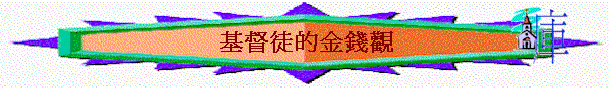

引言
＜金錢是好僕人、壞主人。＞ 茶花女書
一
.錢財的特質1.人的分
「神賜人資財豐富，使他能以吃用，能取自己的分，在他勞碌中喜樂，這乃是神的恩賜。」傳5:19
2.神的恩賜
3.無定的物
「你要囑咐那些今世富足的人，不要自高，也不要倚靠無定的錢財；只要倚靠那厚賜百物給我們享受的神。」提前6:17
A.會走的
「你豈要定睛在虛無的錢財上嗎？因錢財必長翅膀，如鷹向天飛去。」箴23:5
B.會壞的
「不要為自己積儹財寶在地上；地上有蟲子咬，能銹壞，也有賊挖窟窿來偷。只要積儹財寶在天上；天上沒有蟲子咬，不能銹壞，也沒有賊挖窟窿來偷。」太6:19-20
C.不永有的
「因為資財不能永有，冠冕豈能存到萬代？」箴27:24
二
.錢財的影响1.多財富的
＜黃金的枷鎖是最重的。＞巴爾紮克
A.多有朋友
「貧窮人連鄰舍也恨他；富足人朋友最多。」箴14:20
B.煩亂不安
「少有財寶，敬畏耶和華，強如多有財寶，煩亂不安。」箴15:16
＜一九五三年美國科學促進會年會上，波士頓的一位心理學醫生朗誦論文說：「文明時代的金錢病就是失眠、胃潰瘍、頭痛、神經失常。」這些病不是財富多少影響的，而是對金錢的概念影響的。＞ 五十靈筵，史祈生
C.行事不義
「多有財利，行事不義，不如少有財利，行事公義。」箴16:8
D
.難進天國「耶穌對門徒說：「我實在告訴你們，財主進天國是難的。」太19:23
2.少財富的
＜一無所有的人是有福的，因為他們將獲得一切！＞羅曼
.羅蘭A.朋友遠離
「財物使朋友增多；但窮人朋友遠離。」箴19:4
「貧窮人，弟兄都恨他；何況他的朋友，更遠離他！他用言語追隨，他們卻走了。」箴19:7
B.敬畏真神
「少有財寶，敬畏耶和華，強如多有財寶，煩亂不安。」箴15:16
C.行事公義
「多有財利，行事不義，不如少有財利，行事公義。」箴16:8
3.專注財的
a.難事奉神
「一個人不能事奉兩個主；不是惡這個，愛那個，就是重這個，輕那個。你們不能又事奉神，又事奉瑪門（瑪門：財利的意思）。」」太6:24
～一個老師在班上提及關於財主和拉撒路的故事，他問道：「孩子們，如今你選擇什麼，財主或是拉撒路？」一個男孩答道：「當我活著的時候，我願做財主，死了以後做拉撒路。」不可能那樣。?曾盛泉、若石＜慕迪喻道故事＞
b.難結果子
「撒在荊棘裡的，就是人聽了道，後來有世上的思慮、錢財的迷惑把道擠住了，不能結實。」太13:22
三
.錯誤金錢觀＜如果你把金錢當成上帝，它便會像魔鬼一樣折磨你。＞菲爾丁
1.錯誤專注
「你豈要定睛在虛無的錢財上嗎？因錢財必長翅膀，如鷹向天飛去。」箴23:5
2.貪戀財利
「貪戀財利的，擾害己家；恨惡賄賂的，必得存活。」箴15:27
「貪財是萬惡之根。有人貪戀錢財，就被引誘離了真道，用許多愁苦把自己刺透了。」提前 6:10
～傳說古時候有一種怪獸；四蹄似牛，頭上長角，身上有鱗，尾巴翹得很高，嘴巴張得很大，兩眼突出，模樣十分古怪，它不是「四不相」。這種怪獸叫「貪」（就是貪得無厭﹐因為它是畜類所以加「犬」旁）。它貪吃千禽百獸，甚是貪得無厭，異想天開，想吃天上的太陽。一天「貪」到海邊喝水，望見太陽的影子在大海中飄浮，以為就是太陽﹐結果跳入大海，被洶涌的海浪吞沒淹死。http://www.ccbiblestudy.org/Topics/90DailyWalk/90GT11.htm
3.不勞而獲
「不勞而得之財必然消耗；勤勞積蓄的，必見加增。」箴13:11
4.急速發財
「人有惡眼想要急速發財，卻不知窮乏必臨到他身。」箴28:22
5.詭詐得財
「用詭詐之舌求財的，就是自己取死；所得之財乃是吹來吹去的浮雲。」箴21:6
6.胡亂揮霍
「愛慕智慧的，使父親喜樂；與妓女結交的，卻浪費錢財。」箴29:3
「愛宴樂的，必致窮乏；好酒，愛膏油的，必不富足。」箴21:17
7.吝惜錢財
「有施散的，卻更增添；有吝惜過度的，反致窮乏。」箴11:24
8.以財自恃
「富足人自以為有智慧，但聰明的貧窮人能將他查透。」箴28:11
9.忘記真神
「恐怕你吃得飽足，建造美好的房屋居住，你的牛羊加多，你的金銀增添，並你所有的全都加增，你就心高氣傲，忘記耶和華─你的 神，就是將你從埃及地為奴之家領出來的，」申8:12-14
四
.正確金錢觀＜盡你所能去賺取，盡你所能去儲蓄，盡你所能去施捨。＞約翰衛斯理
1.要賺錢
「你們自己原知道應當怎樣效法我們。因為我們在你們中間，未嘗不按規矩而行，也未嘗白吃人的飯，倒是辛苦勞碌，晝夜做工，免得叫你們一人受累。這並不是因我們沒有權柄，乃是要給你們作榜樣，叫你們效法我們。我們在你們那裡的時候，曾吩咐你們說，若有人不肯做工，就不可吃飯。因我們聽說，在你們中間有人不按規矩而行，什麼工都不做，反倒專管閒事。我們靠主耶穌基督吩咐、勸戒這樣的人，要安靜做工，吃自己的飯。」帖後3:7-12
2.要儲備
「當將你的糧食撒在水面，因為日久必能得著。你要分給七人，或分給八人，因為你不知道將來有什麼災禍臨到地上。雲若滿了雨，就必傾倒在地上。樹若向南倒，或向北倒，樹倒在何處，就存在何處。看風的，必不撒種；望雲的，必不收割。風從何道來，骨頭在懷孕婦人的胎中如何長成，你尚且不得知道；這樣，行萬事之神的作為，你更不得知道。早晨要撒你的種，晚上也不要歇你的手，因為你不知道哪一樣發旺；或是早撒的，或是晚撒的，或是兩樣都好。」傳11:1-6
＜大富由天，小富由儉。＞古人
3.要知足
「然而，敬虔加上知足的心便是大利了；因為我們沒有帶什麼到世上來，也不能帶什麼去。只要有衣有食，就當知足。但那些想要發財的人，就陷在迷惑、落在網羅和許多無知有害的私慾裡，叫人沉在敗壞和滅亡中。貪財是萬惡之根。有人貪戀錢財，就被引誘離了真道，用許多愁苦把自己刺透了。」提前6:6-10
「你們存心不可貪愛錢財，要以自己所有的為足；因為主曾說：『我總不撇下你，也不丟棄你。』」來13:5
＜世界上沒有比基督徒更貧窮的人；但是，世界上也沒有比基督徒更富有的人。經上說：「似乎一無所有，卻是樣樣都有。＞內村鑑三
4.要記念
A.記念窮人
「凡有世上財物的，看見弟兄窮乏，卻塞住憐恤的心，愛神的心怎能存在他裡面呢？」約壹3:17
「從前偷竊的，不要再偷；總要勞力，親手做正經事，就可有餘分給那缺少的人。」弗4:28
「憐憫貧窮的，就是借給耶和華；他的善行，耶和華必償還。」箴19:17
～在猶太人中間，流傳著這樣一個故事。一天，一個擁有無數錢財的吝嗇鬼去他的拉比那兒乞求祝福。拉比讓他站在窗前，讓他看外面的街上，問他看到了什麼，他說:「人們。」拉比又把一面鏡子放在他面前，問他看到了什麼，他說：「我自己。」拉比解釋說，窗戶和鏡子都是玻璃做的，但鏡子上鍍 了一層銀子。單純的玻璃讓我們能看到別人，而鍍上銀子的玻璃都只能讓我們看到自己。人們的眼睛常被金錢所蒙蔽，只見自己而不見別人，這樣的人怎能得到幸福呢？
B.記念神家
「人豈可奪取神之物呢？你們竟奪取我的供物。你們卻說：『我們在何事上奪取你的供物呢？』就是你們在當納的十分之一和當獻的供物上。因你們通國的人都奪取我的供物，咒詛就臨到你們身上。萬軍之耶和華說：你們要將當納的十分之一全然送入倉庫，使我家有糧，以此試試我，是否為你們敞開天上的窗戶，傾福與你們，甚至無處可容。」瑪3:8-10
5.存天上
「不要為自己積儹財寶在地上；地上有蟲子咬，能銹壞，也有賊挖窟窿來偷。只要積攢財寶在天上；天上沒有蟲子咬，不能銹壞，也沒有賊挖窟窿來偷。」太6:19-20
＜君子憂道不憂貧＞孔子
～有一位財主，臨終時央求來接他走的使者，批准他帶一些東西離開這世界，在他再番請求之下，他終被准許。來到天堂門口，守門的問他：「憑甚麼我要批准你入天堂呢？」財主暗笑，慶幸身邊帶了金子，相信一定用得著。於是不慌不忙把箱子打開，天使看罷望他一眼，然而招手著他往天堂口去，天使把門打開，地上金光焛焛。天使轉頭來問財主：「我不曉得你帶這些地磚來幹甚麼？」
http://www.ccbiblestudy.org/Topics/90DailyWalk/90GT11.htm